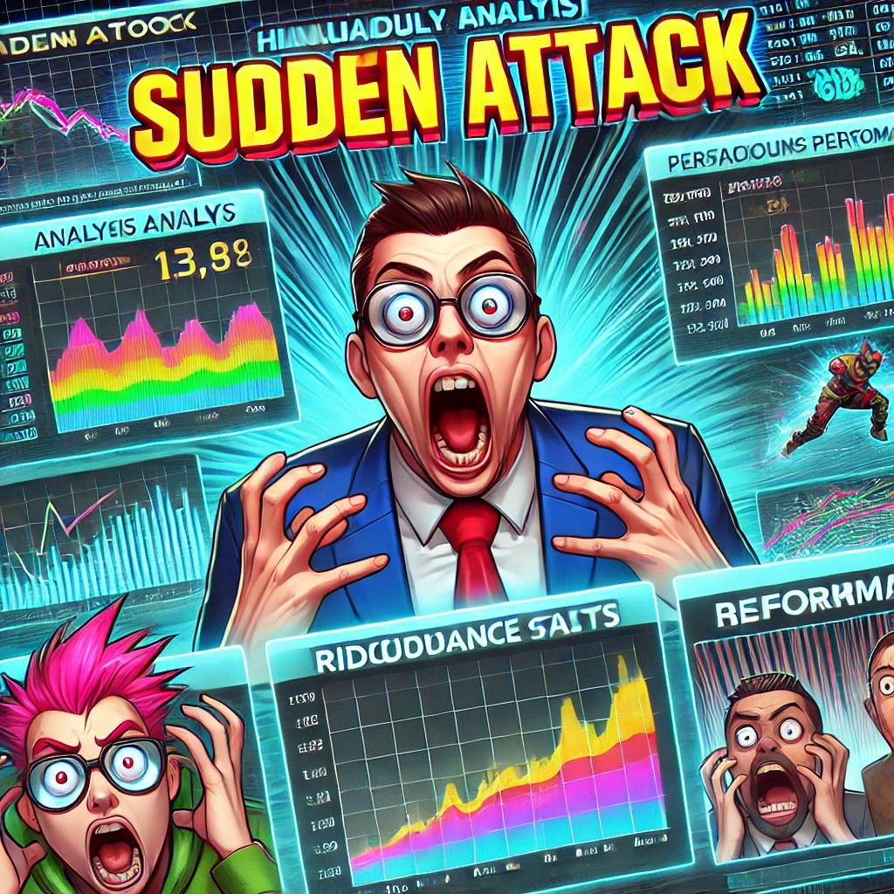
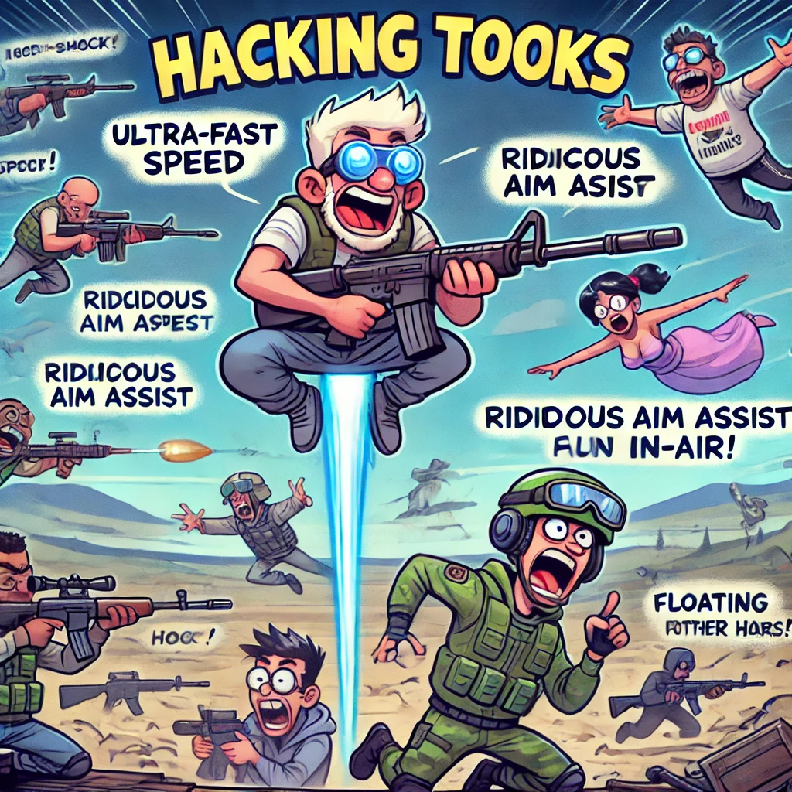
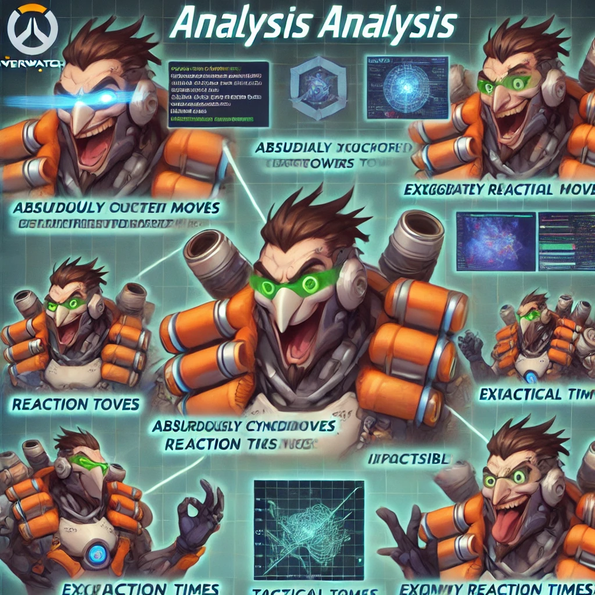
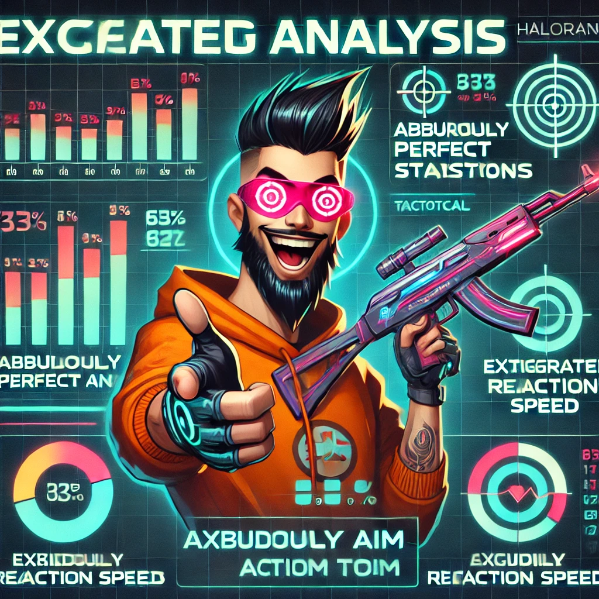

게임 치트? 웃으며 즐기자!
여러분, 게임할 때 가끔 “이게 진짜 공평한 승부인가요?”라는 생각을 해본 적 있으신가요?
오늘은 그 의문을 웃음으로 날려버릴 유쾌한 해킹 도구들을 소개합니다.
‘서든핵’부터 ‘배그핵’, ‘옵치핵’, 그리고 ‘발로핵’까지, 이름만 들어도 웃음이 터지는 이 도구들은 치트 이상의 재미를 선사합니다.
물론, 웃음 뒤에는 “치트는 치트다”라는 냉정한 현실이 숨어 있지만, 핵톡톡은 여러분께 그 이면의 이야기를 재치 있게 전달합니다.
기술의 진보와 함께 게임의 판도를 바꾸는 이 도구들, 그 놀라운 기능과 웃픈 문제들을 지금 바로 확인해보세요!
[서든핵] - 번개같은 반응과 웃픈 경고
서든어택의 서든핵은 말 그대로 번개같은 속도를 자랑합니다.
“적이 보이기 전에 쏴버리자!”는 모토 아래, 정밀한 에임 보조 기능으로 적을 순식간에 제압합니다.
그러나 이 화끈한 승부 뒤에는 게임 공정성을 무너뜨릴 수 있는 어두운 그림자가 도사리고 있답니다.
- 장점: 초고속 반응, 정밀 타격, 다양하고 유연한 설정
- 단점: 공정성 훼손, 계정 정지 위험, 예고 없는 법적 제재

[배그핵] - 전장의 코미디, 웃음과 혼돈의 대명사
배틀그라운드의 전장은 언제나 긴장감 넘치지만, 배그핵을 사용하면 그 전장이 하나의 코미디 무대가 됩니다.
빠른 정보 전달과 정밀한 타겟팅 덕분에 플레이어들은 마치 액션 코미디 영화의 주인공이 된 듯한 기분을 느낍니다.
그러나 그 웃음 뒤에는 서버 불안정과 계정 정지라는 씁쓸한 현실이 기다리고 있으니, 웃음과 경고를 동시에 기억해야 합니다.
- 장점: 실시간 정보 전달, 정밀 타겟팅, 직관적 인터페이스
- 단점: 밸런스 붕괴, 서버 불안정, 계정 정지 위험

[옵치핵] - 팀워크와 웃음이 충돌하는 순간
오버워치에서 팀워크는 필수이지만, 옵치핵은 때때로 그 팀워크를 코믹하게 분열시킵니다.
실시간 데이터와 전략적 지원 기능 덕분에 팀원들은 “우리가 이길 수 있다!”고 외치지만, 동시에 웃픈 갈등 상황을 만들어내기도 합니다.
팀원 간의 신뢰는 물론, 승부의 공정성마저 웃음바다가 될 수 있음을 경고합니다.
- 장점: 팀 전술 지원, 실시간 데이터 제공, 전략적 판단 보조
- 단점: 팀 내 불신, 기능 남용, 계정 정지 위험

[발로핵] - 정밀 조준과 번개 같은 반응의 유쾌한 아이러니
발로란트의 발로핵은 한마디로 ‘조준할 때마다 웃음이 터지는’ 마법 같은 도구입니다.
정밀한 에임 보조 기능과 번개처럼 빠른 반응 속도는 승리를 부르는 열쇠가 되어주지만, 동시에 공정성을 위협하는 아이러니를 안고 있습니다.
사용자 친화적인 인터페이스 덕분에 초보자도 쉽게 접근할 수 있으나, 때로는 “이게 진짜 맞는 건가요?”라는 의문을 자아내기도 합니다.
- 장점: 초정밀 에임, 번개같은 반응, 다양한 맞춤 설정
- 단점: 공정성 훼손, 계정 감시 및 정지, 기술적 오류 위험

결론 - 웃음과 경고가 공존하는 해킹 도구의 세계
핵톡톡은 게임 해킹 도구를 단순한 치트 수단이 아닌, 웃음과 정보가 넘치는 하나의 문화로 승화시킵니다.
이 도구들은 단기적인 승리와 편의를 선사하지만, 동시에 공정성과 게임의 안전을 위협하는 요소로 작용합니다.
유쾌하게 즐기되, 그 이면에 숨은 위험성을 항상 염두에 두어야 합니다.
결국, 게임은 즐기기 위한 것이지만 올바른 선택과 책임감 있는 사용이 함께할 때 그 진정한 재미가 빛을 발합니다.
핵톡톡은 앞으로도 재치 있는 분석과 웃음 가득한 리포트로 여러분의 게임 생활에 특별한 활력을 불어넣어 드릴 것입니다.